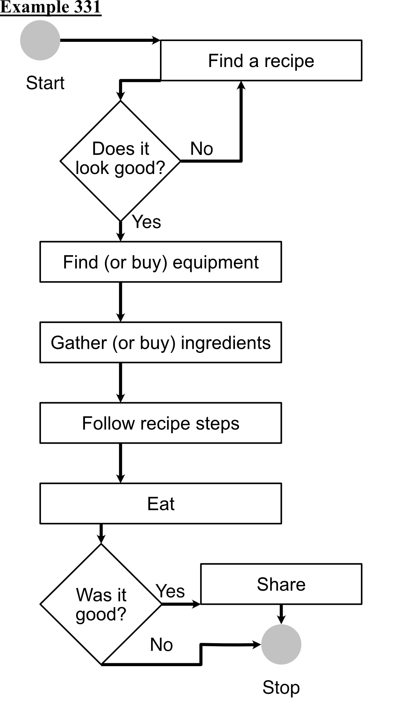

1. Abstract
This research proposes to show that deliberate technological augmentation of instruction with generative artificial intelligence (GAI) can foster meaningful learning without bypassing the cognitive processes that are essential for learning. Concept mapping is an instructional technique designed to contribute to meaningful learning through retrieval and elaboration of students’ conceptions of a subject matter. The proposed research would explore graduate student perceptions of an augmented, guided discovery approach to concept mapping in a blended learning context. If approved, this research would be situated within an existing course in California State University Monterey Bay’s master’s program in Instructional Science and Technology, named Instructional Technology. This research will mix methods, utilizing pre and post-surveys, two to three semi-structured interviews, and an analysis of the concept maps produced during the course.
As instructional designers adapt to the proliferation of GAI software, instructional techniques such as concept mapping should be intentionally rethought to determine whether GAI can contribute to pedagogical success. To do so, an asynchronous e-learning module will guide about 30 graduate students through the process of concept mapping such that they will be able to produce size-constrained concept maps using GAI. This approach manages essential cognitive load while still requiring students to recall, elaborate then organize knowledge of their subject matter. GAI will be positioned as a scaffold for the discovery and refinement of concept mapping skills, rather than a means to offload vital cognitive labor. Despite the limits of this research, the results will inform future instruction on concept mapping in MIST. As well, such a rich case of human-AI collaboration may inform other researchers as they design augmented or GAI-guided instruction.
2. Introduction/Background
2.1. Background on Project
While the disciplines of instructional design and education have long been entangled, in the last few years, there has been a call for intentional collaboration on long standing social problems (Moore, Stefaniak and Reeves, 2025). This includes problems that limit access to opportunity or frustrate student success (Skinner & Richardson, 1988). Designers and educators work to clarify such problems and develop solutions. A development framework known as Universal Design for Learning (UDL) was particularly interesting, in part, because it prescribed the use of multiple representations of knowledge while teaching in order to facilitate student success (Sewell, Kennett, & Pugh, 2022). This aspect of UDL suggested that instructional designs should exploit multimedia to ensure meaningful learning for all.
At California State University Monterey Bay (CSUMB), it was recognized that concept mapping was an underused instructional technique. The master’s program in Instructional Design and Technology (MIST) has been providing instruction on the use of multimedia for instructional design. However, none of the MIST courses provided a lesson on how to make a concept map. Concept mapping, as an instructional technique, provides students an opportunity to create graphic representations of knowledge. It was felt that a short lesson on concept mapping would align with the objectives of Universal Design for Learning and would be a meaningful improvement to the MIST program.
2.2. Problem Statement (gap analysis)
The master’s program in Instructional Science and Technology (MIST) at California State University Monterey Bay (CSUMB) does not teach its students how to make concept maps. During a required course, Interactive Media Design, concept maps are classified as organizational graphics by the students’ textbook (Clark & Mayer, 2023, Chap. 4). MIST would like to provide an evidence-based resource for its students to learn concept mapping, as it does with many instructional techniques. This then is the gap. There is no lesson on making concept maps, yet there could be.
There are two opportunities presented by this gap. First, future instructional designers could learn about concept mapping, later using concept maps to satisfy the need for graphics (visual-media) during an instructional design project. Second, MIST would like to know whether concept mapping can improve students' initial learning of learning theory. Not all students take Theories of Learning (an established and required course), during their first semester. That said, discussions of learning theory are present in all courses. Ideally, students will be able to think critically about learning theories, and explain how their work is informed by one or more theories of learning.
2.3. Rationale for Research
Concept mapping, originally developed in the 1970s, has progressed as computer programs have been integrated to support this valuable instructional technique (Chan & Yang, 2023; Davies, 2011; Novak, 2002). Traditionally, concept mapping has been used as an elaborative learning tactic or during retrieval practice (Adesope, Nesbit, & Sundararajan, 2022; Blunt & Karpicke, 2014). The emergence of generative artificial intelligence (GAI) tools capable of producing structured knowledge representations from natural language prompts, however, introduces a fundamental tension: Clearly, the use of GAI can become a barrier to learning if students use it to avoid elaboration or recall; yet GAI can be used to support critical thinking in the classroom (Law, 2025). This tension is particularly salient in online graduate education, where AI tools are readily accessible, instructor oversight is limited, and students are themselves future designers of learning experiences. The solution, it seems, is old-school but the media is not. Because students can be guided through the act of making a concept map (Novak & Gowin, 1984), GAI software can be used to guide the discovery of concept mapping. The specific question of students’ perceptions of such an augmented and guided discovery approach to concept mapping remains largely unexplored, representing both a gap in the literature and opportunity to inform pedagogical decisions.
MIST proposes to use concept maps to further develop its instruction of theories of learning. Many MIST students encounter theories of learning for the first time while in the program. And because differing theories of learning interpret the same or similar phenomena, learning theories are difficult to distinguish between. Concept mapping, being an additional instructional technique, may prove to be useful as students begin studying theories of learning. Therefore, this research proposes to study students’ experiences of concept mapping augmented by GAI software to better understand the kinds of experiences that students are likely to encounter while concept mapping with GAI.
2.4. Target Audience and Context
The target audience is graduate students. As a result, the target audience has demonstrated a degree of academic expertise, and they might have professional expertise also. Participation in MIST is then a studious phase of their careers. According to Rothwell et al. (2016), professionals in this position are motivated by “practical, hands-on instruction that can help them advance” (p. 70). However, the target audience may not know about the specifics of either concept mapping or learning theory. In this regard, graduate students may be considered novices, who have an "interest in techniques and technical issues” (p. 71).
This research-based capstone project is situated in a university context. The university, CSUMB, has an ongoing commitment to student success and accessible learning. Therefore, CSUMB is committed to continuing the development of both instructional and non-instructional solutions (Office of the President, n.d.). Any and all proposed instructional content will be checked for “barriers to learning,” ensuring its accessibility (Sewell, Kennett, & Pugh, 2022, p. 369). More specifically, this project is situated within MIST, a blended learning environment. MIST faculty and students use Canvas, a learning management system by Instructure. The proposed project will be delivered through Canvas.
2.5. Statement of Research Objectives
The purpose of this research is to explore students’ perceptions of an augmented, guided discovery approach to teaching concept mapping in an instructor-led, blended learning environment. In other words, this research proposes an e-learning product, implementing an asynchronous guided discovery approach to the teaching of concept mapping. A guided approach is not novel. Yet in this case students will be guided in part by using GAI software. To a degree, this is a novel design. William Rothwell et al. (2016) defined instructional design in terms of effectiveness, efficiency and performance (p. 5). The performance, making a concept map, is formalised in the following terminal learning objective.
Given a prompt, graduate students will be able to perform the skill of concept mapping, showing 6 to 7 concepts and at least n-1 propositions (but not more than 3n-1) where n is the number of selected concepts. The design of their concept maps should match the design that was shown during the course.
This project will endeavor to describe what students say about the effectiveness and efficiency of concept mapping after being taught to make concept maps with GAI.
There are two primary objectives of the proposed research. The first primary objective will be to explore the student’s experience of concept mapping after being taught how to use GAI as a support. In order to measure perceptions in context, this research proposes the integration of a concept mapping activity into Instructional Technology, a required course. As well, the field's knowledge of concept mapping has progressed since the 1970s when Joseph Novak and colleagues first designed concept mapping. The second primary objective is to analyze the students' experience of making non-Novakian concept maps as a course assignment. These objectives are qualitative; however, some mixed analysis of qualitative data will hopefully provide additional insight, inspiring further development or even adoption.
2.6. Research Questions
The proposed research will ask questions about the students' experience after engaging with an asynchronous e-learning product, named “Introducing Concept Maps.” An analysis of student experience will be primarily qualitative. There are 2 research questions:
RQ1. What are graduate students’ perceptions of using generative artificial intelligence (GAI) for concept mapping in a course on instructional technology?
RQ2. How will graduate students describe their experience of creating size-constrained concept maps?
3. Review of Relevant Literature
3.1. Briefly, What Is a Concept Map?
A concept map is a kind of diagram or graphic that visually organizes information. Because of this organizational quality, concept maps are considered a kind of graphic organizer (Clark & Mayer, 2023, Chap. 4). Concept maps use words to convey information, but unlike a sentence or paragraph, concept maps delay comprehension by leveraging visual syntax (e.g. lines and shapes). In a normal sentence or paragraph, words are read one after another, meaning comprehension is linear. A reader progresses word by word (phrase by phrase, etc.). Similarly, the beginning of a paragraph is understood before the end of a paragraph. In contrast, the visual nature of concept mapping organizes words or phrases into a wide variety of patterns, not just from right to left (or however a language is normally read).
Concept mapping is an instructional technique, which emerged in the 1970s, and which has been well studied. To be clear, the act of making a concept map is known as concept mapping or cmapping (Novak, 2002). Because all instructional techniques should be guided by an evidence-based framework, it is useful to define concept mapping by referring to Universal Design for Learning (UDL). This framework advocates for the expression of instructional content in multiple formats, including those formats that emphasize patterns (Sewell, Kennett, & Pugh, 2022, p. 366). Concept maps do emphasize patterns, but not only this. Concept mapping requires the learner to elaborate, translating information from one format to another while ensuring coherence.
Concept maps are compositions of a few basic elements. Concepts (often nouns or noun phrases) are related together by linking words or phrases (most often a verb or verb phrase). These elements combine together to create short statements, known as propositions. Concepts, relationships (or linking words), and propositions are essential attributes; however, the content, size, and shape of a concept map may vary (Novak & Gowin, 1984).
3.2. Source Selection
To support the development of concept mapping activities, the author of this paper has reviewed several articles. Four were retrieved from the Education Resources Information Center (ERIC) by searching for these terms: concept mapping, concept mapping and AI, concept map, and student experience. Three were retrieved from Google Scholar by searching for concept mapping, how to teach concept mapping, or concept maps and recall. A few other sources were retrieved from either Google Scholar or ERIC by searching for specific authors, those who had been cited in works already selected. Another few sources were retrieved from the Writing Across the Curriculum repository by searching for prompt engineering. In brief, the literature shows that the technique of concept mapping will improve the learning experience of graduate students, especially if the learning scenario is well-designed. There are benefits for the concept mapper, and the resulting concept map is useful.
3.3. Theoretical Foundations of Concept Mapping
Concept maps have been used in different learning environments for different reasons. Recently, Ching-Yi Chan and Jie Chi Yang (2023) conducted a review of 356 peer-reviewed articles, which were published between 1990 and 2020. This systematic review identified promising trends in current research on concept maps. The work of Laurie O. Campbell is a good example. To study a learner’s development over time, Campbell (2022) investigated the extent to which a collection of Novakian concept maps would show cognitive growth over time, growth here meaning both “process development” and “content development” (p. 177). Also, her students were asked to assess the concept maps of their peers, looking for features like hierarchical structure.
3.3.1. Novakian Concept Maps
One theoretical foundation of concept mapping comes from Joseph Novak, an early adopter of David Ausubel’s conception of meaningful learning. In the 1970s, Novak developed then popularized concept mapping activities. According to his prescriptions, a learner should begin concept mapping by asking a question (known as the focus question). Next, the learner writes down broad, general, or inclusive ideas (concepts). Progress is made by moving from general concepts to specific examples. Concepts are linked by short phrases (propositions) (Novak & Gowin, 1984). Simply put, the Novakian approach creates a multi-level hierarchical structure. However, distant (non-adjacent) concepts can be linked together, even if they are located in different hierarchical levels. These long links were called crosslinks.
Over time Novak iterated on Ausubel’s early definition of learning, concluding that learning could be defined in terms of initial misconception and revision of limited or invalid propositions. To use common terms, Novak’s learners did not know something, had a limited understanding, or they misunderstood. Then, learning simply meant the replacement of misunderstanding with understanding. A true constructivist, Novak (2002) said teaching “is not easy.” Though many instructional strategies require "students [to] construct and reconstruct” their thinking, meaningful learning meant more (p. 555). It was and is an ability to transfer knowledge from the learning environment to everyday life (p. 552). Novak enjoyed cmapping because, in the concept maps of learners, he easily observed “the concept and propositional frameworks that” explained students’ rationale or decisions (Novak, 2002, p. 552).
3.3.2. Elaboration, Recall and Revision
The making of concept maps is a powerful collaborative approach to learning. Janell R. Blunt and Jeffrey D. Karpicke (2014) pointed out that concept mapping might be best understood as an elaboration. Learners elaborate by translating information into a visual syntax, revising “and creating enriched knowledge structures” (p. 849). Using these terms, Campbell (2022) has shown that elaboration can be both serial and communal. For Campbell, peer assessment was the mechanism that supported the development (process development) of critical thinking skills, like evaluation and synthesis (p. 181). On the other hand, Blunt and Karpicke (2014) recognized that concept mapping involves recall if the learner does not work directly from instructional material while making a concept map. Blunt and Karpicke compared retrieval practice activities that used either concept maps or paragraphs. They found that performance on a delayed “short-answer test” was similar across experimental groups (p. 855).
3.3.3. Shape and Structure
Though Novak advocated for hierarchical concept mapping, a strict hierarchy isn’t required for meaningful learning. Empirical work on the shape of concept maps suggests that the specific visual pattern of a concept map matters less than the act of concept mapping itself. In a quasi-experimental study with 156 students (aged 13-17), Emmanuel Folorunso Bamidele and Ezekiel Ojo Oloyede (2013) compared different concept mapping protocols: hierarchical, flowchart, and spider-type maps. Bamidele and Oloyede found no significant differences between the treatment groups; and all groups improved their ability to solve chemistry problems after a five week intervention (p. 70). Interestingly, Ian Kinchin (2001) would have classified the examples presented by Bamidele and Oloyede as nets. To evaluate concept maps, Kinchin developed frameworks that focused on qualia, like gross taxonomy and structural integrity.
3.3.4. Size, the Number of Concepts
Multiple small or size-limited concept maps are more useful in the classroom context. Big concept maps might be used to store knowledge, but their clarity and readability suffer (Abrams, n.d., “An Overview”; Cañas, Reiska, & Novak, 2016). Small concept maps are good for presentations or graphic organizers, for they clearly communicate essential information. In the classroom, students may make a big concept map to “meet their instructors’ expectations” (Cañas, Reiska, & Novak, 2016, p. 140). For example, Keith Taber’s students included so many concepts that he advised them to substitute linking phrases for numbers, then submit a separate list of numbered propositions (Taber, 1998, p. 277). Yet because making small concept maps may improve students' ability to construct meaningful descriptions and categorize their knowledge (Cañas, Reiska, & Novak, 2016), an instructor might simply limit the size of a concept map. Advised by the literature on working memory (Cowan, 2010), selecting a number of concepts between 3 and 9 is reasonable.
Selecting an arbitrary number of concepts may facilitate the classroom implementation of concept mapping activities. Students will of course require specific directions; as a result, an instructor can specify a specific number of concepts and a minimum number of relationships. This will ensure that concept maps have an appropriate degree of connectedness. While this is an arbitrary decision, the alternative requires that students understand the concept of connectedness, perhaps recognizing that the minimum number of relationships for a complete concept map is the same as the number of concepts. As an aside, the maximum is (n)(n-1) the product divided by two where n is the number of concepts–if only one relationship may connect two concepts. Additionally, variation in grades may increase if the sizes of student maps are different. In other words, having maps of the same size prevents an instructor from inadvertently assigning higher grades to larger concept maps.
3.4. Implementation in the Learning Environment
Before learners can engage with concept mapping as an instructional technique, they must be trained; and such training varies. Joseph D. Novak and D. Bob Gowin (1984) have outlined a few similar approaches for different grade levels (1st to 3rd, 3rd to 7th, and 7th and up). Generally speaking, an instructor guides a discussion, explaining essential declarative knowledge, terms concept and linking words. Then, a first concept map is created by both the instructor and the learners together. In contrast, John Edwards and Kym Fraser (1983), who worked with college students, began by comparing concept maps to other diagrams. Then, they provided learners with a step-by-step protocol and opportunities to practice. Keith S. Taber (1994), who references Edwards and Fraser, simply implemented a group concept mapping activity, where an instructor solicited suggestions from the learners in order to draw a concept map on a black board (p. 277).
Concept map training seems relatively easy to implement. Several authors report introductions to concept mapping taking-up about one hour of instruction (Campbell, 2022; Markham & Mintzes, 1994; Taber, 1994). However, certain barriers have been identified. Paulo R. M. Correia and Joana G. Aguiar (2019) noted that, for the concept mapper, the primary barrier to concept mapping is extraneous cognitive load. That said, Correia and Aguiar went on to show that the traditional initial training did reduce cognitive load. Still, they advised instructors to think critically about the instructional strategies selected to teach concept mapping. They designed a series of worked examples. For an instructor, the barrier is more complex, having to do with organizational culture. Kinchin (2001) provided evidence that concept mapping might be seen as opening the door to constructivist pedagogies. While this opening up may certainly be a good thing, teachers (and institutions alike) may not be ready nor willing to transition from an objectivist perspective to a constructivist one.
Also, what is to be done with concept maps? Can they be graded (Kinchin, 2001)? Though Novak and Gowin (1984) devised a scoring system, they warned that “scoring was in many respects irrelevant.” The important things were qualitative changes, which indicated integrative reconciliation or progressive differentiation. Nevertheless, a quantitative interpretation of cmaps might award points for elements like valid propositions, or cross links (Chap. 5). Similarly, Kinchin (2001) argued that quantification of concept mapping was “at odds [with] constructivist philosophy” (p. 1259). Kinchin recognized that even if some propositions are invalid (misconceptions) these links might be useful, operating like bridges to other valid cognitive structures (p. 1260). As has been mentioned, Kinchin developed qualitative frameworks for concept mapping; one focused on “indicators of expertise” and the other focused on shape (p. 1261-1262).
3.4.1. Technological Support
Even though technological tools are readily available, instructional designers and instructors must think carefully about augmenting concept mapping activities with technology. Research by Alf I. Wang, Aleksander A. Elvemo, and Vegard Gamnes (2014) is a wonderful example. At the Norwegian University of Science and Technology, in a course about software architecture, Wang et al. evaluated the effect of Framework for Interactive GameWall (FIGA) software applications on classroom learning-experiences, conducting a multi-part survey. Like Novak, Wang et al. found that formalizing the relationships between concepts “made [students] think” (p. 10). Additionally, Wang et al. showed the quality of classroom integration significantly mediated learning experiences, in their context. This latter point isn’t surprising, for many design processes emphasise the need for careful, intentional planning (Allen, 2025).
Once the learning environment is well understood, technology that supports concept mapping activities can be selected. In the 1970s, concept mapping activities were done with pen and paper. Later, when Post-Its were invented, concepts and labels could easily be re-organized. This both facilitated concept mapping and improved the learning experience (Novak, 2002). Modern drawing software takes this somewhat further. Computer programs can scaffold learners’ use of hierarchical structure, or other Novakian rules. Templates can be designed (Davies, 2014). The internet, too, provides a new opportunity, allowing maps to be shared, even across national borders (Novak, 2002). As well, soon if they don’t already, many generative artificial intelligence (GAI) programs will generate concept maps (Perin et al., 2023) or at least generate lists of concepts.
The prompting of GAI is of particular concern because GAI has only become popular in the last few years. Normally, the study of prompts is referred to as prompt engineering. Though this review only scratches the surface, it seems that academics and industry professionals share an understanding of prompt engineering. There are two primary concerns: the ethical use of GAI and the quality of its results. To scaffold a learner’s prompting, Jeanne B. Law (2025) defined a multi-part ethical prompting protocol, the Rhetorical Prompting Method (RPM). Learners start by clearly defining success, even by using examples; this is a well-known pattern called one-shot or few-shot prompting. As the name suggests, one-shot prompts contain a single example while few-shot prompts contain two to five examples (Osmani, 2025; Lakshmana & Hapke, 2025). Finally, learners should analyze the results, clarifying the “advantages and drawbacks” of GAI utilization (Morrison, 2025, Section “Learning Goals”).
3.5. A Proposal
Taken together, the literature suggests concept mapping activities enrich learning experiences by prompting elaboration, recall or revision, and by emphasising the relationships between concepts. Students do perceive meaningful learning (Campbell, 2022; Taber, 1994; Wang, Aanesl, & Gamnes, 2014). If concept mapping is well-integrated into a course—along with scaffolding and peer assessment—students’ concept maps can clearly show cognitive growth both to instructors and to the students themselves (Campbell, 2022). Also, instructors are free to adopt simplified or delimited concept mapping activities as long as concepts are appropriately differentiated by rational propositional structures (Bamidele & Oloyede, 2013; Abrams, n.d., “An Overview”). In a prior-review, Chan and Wang (2023) suggested that some of these approaches to concept mapping were underrepresented in the literature (p. 6687). Inspired by this suggestion, the author of this paper proposes to study the careful integration of a collaborative concept mapping activity into an instructor-led, blended learning course. Also, the author proposes using concept maps that are limited in size.
4. Solution Description
4.1. Goals of the Project
An e-learning module will be created to teach concept mapping to graduate students who are enrolled in one of the MIST program’s required courses, Instructional Technology. There are three goals.
- Develop an e-learning product, implementing an asynchronous guided discovery strategy.
- Evaluate the e-learning product according to the first two levels of Kirkpatrick’s model of evaluation.
- Characterize graduate students’ experiences of concept mapping during Instructional Technology, a required course.
4.2. Learning objectives
The proposed e-learning product has one terminal learning objective and four enabling learning objectives.
- Given a graphic or diagram, graduate students will be able to determine if it is a concept map or not, achieving 80% accuracy on an instructor designed assessment.
- Given a list of attributes, graduate students will be able to identify the component parts of a concept map, identifying essential components and variable components, achieving 80% accuracy on an instructor designed assessment.
- Given a prompt, graduate students will be able to perform the procedure of concept generation, listing between 3 and 9 distinct concepts.
- Given a list of propositions, graduate students will be able to convert the list of propositions into a concept map. Their map contains all of the information presented in the list of propositions.
- Given a prompt, graduate students will be able to perform the skill of concept mapping, creating a concept map with 8 concepts and at least 8 propositions, but not more than ( (n)(n-1) ) / 2 where n is the number of selected concepts. The design of their concept maps should match the design that was shown during the course.
4.3. Proposed Solution to Fill the Gap
The proposed solution is an e-learning product, implementing an asynchronous guided discovery strategy, for the teaching of concept mapping. The proposed e-learning product has been conceptualized as a micro-course, and named “Introducing Concept Maps.”
4.4. Learning Theories, Instructional Principles
As has been mentioned, the proposed e-learning module will guide graduate students through the act of concept mapping. In guided discovery, as Harold D. Stolovitch and Erica J. Keeps have pointed out, “the amount of guidance…and its nature” is determined by a learner’s level of understanding (Stolovitch & Keeps, 2011, Chap. 8). For learners who do not have much prior knowledge, either the instructor or the e-learning program should control the pace of learning (Ertmer & Newby, 2013, p.49). However, as learners progress through the program, they will be given more control. In other words, the act of concept mapping should be chunked, scaffolded, and then the scaffold should fade over time.
4.4.1. A Universal Introduction
There are two well known instructional theories that guide the beginnings of this course. The universal model of Harold D. Stolovitch and Erica J. Keeps prescribed that a rationale for learning be presented first (Stolovitch & Keeps, 2011, Chap. 6). Robert Gagné’s model of instruction suggested that the learning outcomes be presented second. Third, Gagné suggests that instruction should activate prior knowledge. “Making Concept Maps” begins with a rationale and a set of learning objectives, only then moving on to the first activity.
4.4.2. Classify Concepts
Graduate students in MIST are not expected to have prior knowledge of concept mapping. At this time, anecdotally, few courses at CSUMB utilize concept maps for instruction. “Introducing Concept Maps” will carefully sequence content, beginning with simple, familiar ideas. Both Gagné and M. David Merrill (2025) suggested that learning should begin by activating a learner’s prior-knowledge. Merrill’s classify concepts tactic guided the design of this first activity. In this case the concept to be classified is a concept map. To activate prior-knowledge, simple examples of concept maps and non-examples will be related to the simple English sentence. Learners will classify these examples as either it is a concept map or it isn’t a concept map. The program will provide immediate confirmation or correction. Examples will become more complex as the learners build up their understanding.
4.4.3. Connection and Collaboration
As graduate students progress, they will be given more control over the pace of learning. In the second two learning activities, students will begin making their own concept map, perhaps their first concept map, and the result is not predetermined. Variation is seen as a strength of the guided discovery method. In the latter part of the micro-course, the act of concept mapping is chunked into two activities, concept generation and construction of propositions. After each activity graduate students will share their results into an online forum. Also, generative artificial intelligence (GAI) will be used during both activities. Students will be asked to carefully consider its results, considering aspects like cohesivity, or the strength of the associations used to link concepts together.
The use of peer interaction will allow students to perform slightly better than they would otherwise be able to. The proximal development of this procedural or process knowledge is both likely to lead to student success and promotes higher-order thinking (Campbell, 2022, p.170). Student interaction was designed with the collaborative learning theories of Norman D. Vaughan et al. (2023). They suggest that inquiry is facilitated when students discuss a common experience (p. 47). The discussion prompts will ask students to reflect on the differences between their own results and that of their peers. Also, because students will be using GAI, students will necessarily be considering their prompting and design decisions. Here, reflection creates an opportunity for meaningful learning even while automating their work.
4.4.4. Cognitivism
This guided discovery approach will be delivered online, and therefore this research has leveraged the multi-media design principles defined by Ruth C. Clark and Richard E. Mayer (2023). Many of Clark and Mayer’s principles are intended to manage essential cognitive processing and mitigate extraneous cognitive processing (Chap. 2). The micro-course uses a polite, conversational second-person tone of voice (following the personalization principle). And it leverages emotional design recommendations, which include warm color-tones and rounded rectangles for concept labels. Concept mapping is a visual activity, so great care was taken to avoid overloading visual processing. The amount of on-screen text was limited wherever complicated graphics were used.
5. Method
5.1. Design/Development Narrative
The design of this research was approached systematically, using the well known ADDIE model. Analysis was conducted by reviewing relevant research via access to online library databases such as Google Scholar, ERIC, and PsycInfo. The design was conducted by drafting descriptions of e-learning content. After reflection and revision, a storyboard was drawn. The development of e-learning materials will be done using an e-learning authoring tool. If approved, the implementation will be managed by the researchers. And surveys will be conducted before the training and after a performance test.
There are two parts to this micro-course, and some additional material was designed to support students if they review or study this material. The two parts are as follows.
- Classification of Diagrams
- Reading and Identifying Elements
Afterwards the students will engage in a discussion activity, in which they apply their knowledge and utilize GAI to augment their concept mapping abilities. Finally, there is a performance test. Students will create and submit three concept maps, one each about behaviorism, cognitivism and constructivism.
5.1.1. Rationale and Objectives
Though it is not a learning activity, the micro-course begins with a rationale for learning and then presents learning outcomes. Robert M. Gagné, Harold D. Stolovitch and Erica J. Keeps have all stated that learning is promoted when learners have a clear understanding both of why they are learning and what it is that they should be able to do after the course is completed (Rothwell et al., 2016, p. 154; Stolovitch & Keeps, 2011). The rationale and learning objectives are the first 2 events in “Introducing Concept Maps.”
5.1.2. Classification of Diagrams
The term classify concepts is used by Merrill (2025) to describe a kind of learning activity. In his view, if a learning objective includes the recognition of a kind of thing, learners should be shown examples and non-examples and should be given the opportunity to practice classification. In this case, the thing is a concept map. This classification activity is placed first for two reasons. First, because it is an interactive activity, it will gain the attention of the learners (Gagné’s 1st event). Second, it activates the prior-knowledge of learners by showing concept maps alongside other graphic organizers, which learners may have seen before.
5.1.3. Reading & Identifying Elements
In part two, learners begin to read concept maps, and they identify the essential component parts of these diagrams. Again, this takes an active learning approach, frequently asking students to respond to multiple choice questions. As well, it elaborates on the knowledge gained in part one. Students are shown similar concept maps and are asked to identify how or why they are similar. The vocabulary necessary for these distinctions is presented and then used. Throughout, immediate feedback is provided after students answer a question or click on an interactive graphic.
5.1.4. Application
Learners will have an opportunity to practice, applying what they have learned when making their own concept map. To provide guidance, a GAI program, like ChatGPT, will be used. Students will post their concept maps in a Canvas discussion, and there step-by-step instructions will be provided. Learners will be shown how to prompt GAI for a list of concepts (managing essential load), then learners will select the concepts that they think are relevant, pair these concepts, and utilize GAI to create possible propositions. Finally, the students will revise their propositions, prompt GAI to construct a concept map, revise again, and post. Hopefully, learners will adopt any good ideas posted by their peers.
Lastly learners will engage with a performance test, an assignment. No guidance will be given on this Canvas page; however, students can review their notes or navigate back to previous Canvas pages. As well, a rubric has been written to ensure that students know what is expected of them. The micro-course will be situated in Week 3. The students will have one week to complete all of the aforementioned activities.
5.2. Testing
A team of two graduate students conducted usability and pilot testing. Learning and the reactions of the eight voluntary participants were evaluated using a survey, pretest and posttest. Usability was evaluated by reviewing data from one survey alongside notes taken during the direct observations of three participants. The pre/posttests contained ten questions each, and each question was worth 15 points. This point value allowed me to assign equal weight to each one of the pre/posttest questions. The seven-question learner survey asked about common usability concerns like pacing and ease of navigation.
Once the data was collected, the evaluators computed a paired t-test using Excel, and found that students’ scores had improved. The average performance of students on the pretest (X̅=0.37, SD=0.15) and the average performance on the posttest (X̅=0.65, SD=0.16) differed significantly. From those results, I concluded that the participants did, in fact, learn about concept mapping by engaging with the prototype. By doing so, their scores on the posttest increased (p<0.05, df=7). Since the data yielded statistically significant results, the effect size was calculated. The effect size was large (d=1.83). Therefore the evaluators rejected the null hypothesis; and inferred that if this design was implemented for more students, it would be an effective means of teaching students about concept mapping.
Usability testing revealed that participants who were observed interacted with the module as expected. Based on observations, the user interface of the learning module was straightforward and easy to navigate. However, the initial design of the prototype was too long; as a result, not all of the participants were able to complete the prototype. Several participants displayed some hesitancy, and asked aloud if they needed to complete the discussions. It is possible that varying levels of proficiency with AI contributed to hesitancy. One participant did not already have any accounts with a GAI provider, so they created one.
5.3. Ethics
“Introducing Concept Maps” will align with the instructional practices of both CSUMB and MIST. The authors of this research are committed to diversity, equity and inclusion. All content will be checked for “barriers to learning” (Sewell, Kennett, & Pugh, 2022, p. 369). For example, all content will be provided only in English, therefore learners who speak English as a second language may require additional support. Engagement will be observed with a critical eye, ensuring that any learner from any culture will be supported during instruction. However, an audio-only concept mapping solution, unfortunately, is out of scope. The selected learning management systems and authoring tools will provide a number of accessibility features as well as an accessible online platform for e-learning. This research is expected to receive an expedited review from the institutional review board working with CSUMB. In addition, participants will be asked to provide consent for anonymized qualitative data to be published.
5.4. Participants
The target audience members are graduate students, who will be enrolled in IST524 Instructional Technology during a fall semester at CSUMB. Enrolled graduate students will be sent information about this research project, requesting that they participate. As well, I will present some information in-person at orientation and again during office hours. A final report will state the total number of graduate students and the number that agreed to participate. Also, demographic data will be collected by an introductory survey, see Appendix A. The final report will include aggregated demographic information, omitting any small groupings to avoid infringing on student privacy.
5.5. Research Design
A mixed-methods case study design will be conducted after the implementation of “Introducing Concept Maps.” Two surveys will be conducted, one before and after. As well, if participants can be found two to three semi-structured interviews will be conducted. This approach will mix qualitative and quantitative, collecting both types of data on the survey. In addition, because students will submit concept maps for review, these maps will be a source of qualitative data. Most qualitative data will be inductively coded then thematically analysed. Concept maps will be an exception, for these will be analyzed according to an a priori rubric.
5.6. Data Collection
To begin, the sample population will take an introductory survey. The introductory survey is composed of 10 questions; this instrument is included in appendix A. Next, participants will engage with the micro-course. “Introducing Concept Maps” is approximately one hour long and can be completed asynchronously and online. It will require access to the internet, access to generative artificial intelligence software, and access to an instance of Canvas, a learning management system.
Graduate students will be asked to apply concept mapping during an assignment for Instructional Technology on theories of learning. Qualitative data, concept maps, will be collected from students upon completion of this assignment. Confirmation and corrections will be provided, commenting both on the structure of their concept maps and on their content. In other words, the rubric used to grade the assignment will assess that theories of learning are accurately represented and that concept maps are well made. Gross morphology and connectedness will be assessed (Kinchin, 2013). Also, the semantic clarity of propositions will be assessed (Correia & Aguiar, 2019). Part of this rubric is outlined in appendix C
After graduate students complete the assignment they will take a learner survey. The learner survey is 14 questions long; this survey is in Appendix D. The initial survey and the learner survey both ask open-ended questions about students' experience with concept mapping. And both surveys are intended to discover how students felt about using GAI for this assignment.
Those students who are willing, will be contacted for semi-structured open-ended interviews. Only two to three interviews will be conducted; and these will be recorded using Zoom, a video conferencing software. An interviewer will ask questions about the student’s memories of concept mapping, guiding the conversation through the student’s procedure or workflow. The survey protocol as well as a list of probes is included in Appendix E.
5.7. Data Analysis Methods and Process
Mixed research will be organized and analyzed separately. As has been mentioned, a thematic analysis will be conducted. Qualitative survey data will be coded, using an inductive approach. The same inductive approach will be applied to interview data. Categories and then themes will be produced. The concept maps will be analyzed using an a priori rubric, which assesses features of students’ concept maps. Quantitative, nominal data will be placed into frequency tables, and descriptive statistics (like mean, range, and standard deviation) will be computed for ordinal data. The interpretations will rigorously define the different descriptions that students come up with. There may be a few different opinions on this, not least because concept mapping with GAI is a relatively new phenomenon.
6. Resources
6.1. Personnel
The primary assets to this research are personnel. There are two researchers, and a faculty member contributing to this endeavor. Dr. Sarah Evanick will aid the implementation of “Introducing Concept Maps” by hosting this activity within the required course Instructional Technology. Dr. Evanick has 19 years of experience in the field of instructional design, both as an instructor and a researcher. Dr. Miguel Lara will advise both how the study is conducted and how data are analyzed. Dr. Lara is a full professor in the School of Computer and Design at CSUMB, teaching in MIST. Currently, he is leading and coordinating the quality assurance efforts of online and hybrid courses at CSUMB. Both Dr. Evanick and Dr. Lara are advising Noah S. Kevy, the author of this proposal. I will conduct the proposed research and analyze the data collected, working alongside my advisors. I am a graduate student in the MIST program, with a background in electrical engineering and computer science. I have been studying concept mapping since my enrolment.
6.2. Media and Software
The media selected for this research align with the standards of CSUMB and MIST. Because the host course is delivered through Canvas, a learning management system, the micro-course will be delivered through Canvas also. The micro-course is being developed in Articulate Rise 360, an e-learning authoring tool. Rise is well liked in the instructional design field, and was recommended by Dr. Lara. The surveys will be delivered through Qualtrics, a software as a service provider. The data will be analyzed with SAS or a similar statistics software suite. The cost of these materials is substantial; however, CSUMB is providing many if not all of these resources. Therefore the monetary cost of conducting this research is negligible.
The list of material resources is summarized here.
- Articulate Rise 360
- Canvas
- SAS or similar
- Qualtrics
The development of the micro-course required some additional materials and expertise. I have drawn many of the graphics used in “Introducing Concept Maps” with Affinity Designer. Also, during the implementation of the micro-course students will require access to GAI software. The following design resources are required: Vector drawing software (e.g. Affinity Designer), GAI software (e.g. ChatGPT).
7. Timeline for 2026
April
- Draft a research proposal.
- Begin drafting "Introducing Concept Maps” (ICM).
May
- 5th, The proposal is due.
- Submit the proposal to IRB
- 1st to 20th, Draft ICM.
- 21st, Review forms for participants.
- 23rd to 3rd, Complete ICM.
June
- 3rd, First Day of Summer Session
- 3rd, Check on the expedited IRB review process.
- 3rd, Begin formative evaluation of ICM.
- 6th, Review forms for participants.
- 20th, End formative evaluation
July
- 3rd, Market study to participants.
August
- 22nd, Enroll participants.
- 25th, First day of Wither Session
- 30th, Send the introductory survey
September
- 14th, Implement ICM
- 15th, Implement performance tests
- Students learn about the 3 major theories of learning.
- Analyse their use of concept maps
- 21st, Send the learner survey
October
- 1st, Analyze Data
- 5th, Write Report
- 20th, Revise Report
November
- Report is due.
- Look for an academic journal.
- Submit the report to an academic journal.
December
- Wait for a request for revision
8. Implications and Limitations
8.1. Implications
Future graduate students in MIST, who make concept maps with GAI, may form opinions similar to those described in this study. Opinions may vary on multiple dimensions: from positive to negative, from useful to cumbersome. This study will discover what these dimensions might be, and it will discover what views emerge from these variables. It is possible that some of the findings will implicate the general use of GAI software. Students may critique features of the user interface, or they may comment on the amount of time spent online. Yet many of the implications will focus on concept mapping. For example, students may alter the three phase process that was taught to them. Of particular interest is the question of adoption. Students may want to make more concept maps, especially if GAI facilitates this process. In other words, the findings will implicate adoption or rejection of concept mapping.
8.2. Limitations
The results of this research can only be used to predict student experiences under specific conditions. Sampling bias, along with other additive and interactive effects, significantly limit generalization. As well, because surveys will be self-reported, there will be some response bias present in the data. Interview data may suffer from response bias as well. Yet it is likely that only one interviewer will be used, reducing the interviewer effect. As well, participants were asked to answer honestly and a rapport will be carefully constructed as the interview commences. Concept maps are likely to represent the particular views of the concept mapper (Edwards & Fraser, 1983); as a result, the sample of concept maps will present with the same limitations as the sample of participants.
In fact, the results are likely to be predictive only for the graduate students who attend MIST and who are similar to those who participated. Educational Technology programs or programs that teach Instructional Systems Design may be able to use the research provided here, to cautiously understand what concept mapping activities could be like at their institution. To this end, researchers will ensure that demographic information is included. Also, the report will include a rich description of the kinds of concept mapping protocols students engaged in. Finally, the interviews will focus on the students’ memories of this experience to limit the influence of historical selection.
The general population of English speaking graduate students is not implicated. In other words, the results of this study cannot be generalized with any reasonable degree of confidence. Also, the sample population is not representative of subpopulations of graduate students, like those who primarily speak a different language or who are differently abled.
9. References
Abrams, R. (n.d). An Overview of Concept Mapping. In Abrams R., Iuli R., & Kothe, D. A (n.d.). Collaborative Literature Review of Concept Mapping. The Meaningful Learning Research Group. https://www.mlrg.org/clr-conceptmapping.html
Adesope, O. O., Nesbit, J. C., Sundararajan, N. (2022). The Mapping Principle in Multimedia Learning. In Mayer, R. E., & Fiorella, L. (Eds.), The Cambridge Handbook of Multimedia Learning (3rd ed., pp. 351-359). Cambridge University Press.
Allen, M. (2025). The Successive Approximation Model. In Reiser, R., Carr-Chellman, A., & Dempsey, J. (Eds.). Trends and Issues in Instructional Design and Technology (5th ed., pp. 15-37). Routledge.
Bamidele, E. F., & Oloyede, E. O. (2013). Comparative Effectiveness of Hierarchical, Flowchart and Spider Concept Mapping Strategies on Students’ Performance in Chemistry. World Journal of Education, 3(1), 66–76. https://doi.org/10.5430/wje.v3n1p66
Blunt, J. R., & Karpicke, J. D. (2014). Learning with retrieval-based concept mapping. Journal of Educational Psychology, 106(3), 849–858. https://doi.org/10.1037/a0035934
Campbell, L. O. (2022). Learner Development Through Serial Concept Mapping. Knowledge Management & E-Learning, 14(2), 170-185.
Cañas, A. J., Reiska, P., & Novak, J. D., (2016). Is My Concept Map Large Enough? In Cañas, A. J., Reiska, P., Novak, J. D. (eds) Innovating with Concept Mapping. CMC 2016. Communications in Computer and Information Science, 635. 128-143. https://doi.org/10.1007/978-3-319-45501-3_10
Chan, Y., & Yang, J. C. (2023). Concept Mapping in Computer Supported Learning Environments: A Bibliometric Analysis. Interactive Learning Environments, 31(10), 6678-6695.
Correia, R. M., & Aguiar, J. G. (2019). The Role of Worked Examples to Teach Concept Mapping. Journal for Educators, Teachers and Trainers, 10(1), 67-83.
Cowan, N. (2010). The Magical Mystery Four: How is Working Memory Capacity Limited, and Why? Current Directions in Psychological Science, 19(1). 51-57.
Davies, M. (2011). Concept mapping, Mind Mapping and Argument mapping: What Are the Differences and Do They Matter? Higher Education, 62(3), 279-302.
Edwards, J., & Fraser, K. (1983). Concept Maps as Reflectors of Conceptual Understanding. Research in Science Education, 13, 19-26.
Kinchin, I. M. (2001). If concept mapping is so helpful to learning biology, why aren’t we all doing it? International Journal of Science Education, 23(12), 1257–1269. https://doi.org/10.1080/09500690010025058
Law, J. B. (2025). Before the Paragraph, After the Prompt: Collaborative Invention with Generative AI. In Schnitzler, C, Vee, A., & Laquintano, T. (Eds.), TextGenEd: Continuing Experiments. The WAC Clearinghouse. https://doi.org/10.37514/TWR-J.2024.2.1.01
Lakshmanan, V., & Hapke, H. (2025). Generative AI Design Patterns. O’Reilly.
Markham, K. M., & Mintzes, J. J. (1994). The Concept Map as a Research and Evaluation Tool: Further Evidence of Validity. Journal of Research in Science Teaching, 31(1), 91-101.
Moore, S., Stefaniak, J., & Reeves, T. C. (2025). The Research We Need: Barriers, Methodologies, and Strategic Planning for an Educational Technology and Instructional Design Research Agenda. Journal of Computing in Higher Education, 37. 497-506. https://doi.org/10.1007/s12528-025-09457-1
Morrison, G. (2025). Can an AI Do That? In Schnitzler, C, Vee, A., & Laquintano, T. (Eds.), TextGenEd: Continuing Experiments. The WAC Clearinghouse. https://doi.org/10.37514/TWR-J.2024.2.1.01
Nelson, D. L., McEvoy, C. L., & Schreiber, T. A. (1998). The University of South Florida word association, rhyme, and word fragment norms. http://www.usf.edu/FreeAssociation/
Novak, J. D., & Gowin, D. B. (1984). Learning How to Learn. Cambridge University Press.
Novak, J. D. (2002). Meaningful Learning: The Essential Factor for Conceptual Change in Limited or Inappropriate Propositional Hierarchies Leading to Empowerment of Learners. Science Education, 86(4), 548-571.
Osmani, A. (2025). Beyond Vibe Coding. O’Reilly.
Perin, W. A., Cury, D., Aguiar, C. Z., & Menezes, C. S. (2023). From Text to Maps: Concept Map Generation Using Fine-Tuned Large Language Model. Congresso Brasileiro De Informática Na Educaçãco, 34, 1317-1328. https://doi.org/10.5753/sbie.2023.234749.
Sewell, A., Kennett, A., & Pugh, V. (2022). Universal Design as a Theory of Inclusive Practice for Use by Educational Psychologists. Educational Psychology in Practice, 38(4), 364-378. https://www.tandfonline.com/doi/full/10.1080/02667363.2022.2111677
Skinner, E. F., & Richardson, R. C. (1988). Making It in a Majority University: The Minority Graduate's Perspective. Change, 20(3), 34-35, 38-42. https://www.jstor.org/stable/40164643
Taber, K. S. (1994). Student Reaction on Being Introduced to Concept Mapping. Physics Education, 29(5), 276-281.
Vaughan, N. D., Dell, D., Cleveland-Innes, M., & D. Randy Garrison D. R. (2023). Principles of Blended Learning: Shared Metacognition and Communities of Inquiry. AU Press.
Wang, A. I., Aanesl, A., & Gamnes, V. (2014). Three Social Classroom Applications to Improve Student Attitudes. Education Research International. Article 259128. http://dx.doi.org/10.1155/2014/259128
Appendix A: Introductory Survey
Introduction
The purpose of this questionnaire is to discover what you know about a specific kind of graphic organizer called a concept map. The data from this questionnaire will be used to inform the further development of our instructional design curriculum. And we would like to better understand the needs of our students.
If you have any questions or concerns, you may email Noah S. Kevy at nkevy@csumb.edu, and we’ll respond as soon as we can.
Survey Questions
Question 1: Which of the following graphic organizers are you most familiar with?
- A Matrix Table
- A Contingency Table
- A Venn Diagram
- A Mind Map
- A Concept Map
- A Tree Diagram
- I’m not sure.
- Other: _____
Question 2: How many concept maps have you created in the last five years?
- None
- 1 or 2
- 3 to 10
- 11 to 20
- 20 or more
Question 3: How often do you create concept maps?
- Never
- Rarely
- Sometimes
- Often
Question 4: What is a concept map? Please describe it to the best of your ability; if you don’t know that’s ok just please say so.
Question 5: In your opinion, are concept maps useful or not? If so, please explain why. If you don’t know, that’s ok just please say so.
Question 6: From the list below, please select the word that you most closely associate with the word concept.
- Idea
- Understand
- Thought
- Way
- Grasp
- Meaning
- Reason
- Belief
- Learn
- Vision
- Other _____
Question 7: How often do you use generative artificial intelligence (GAI) software?
- Often
- Sometimes
- Rarely
- Never
Question 8: If you were going to use generative artificial intelligence software, which provider would you be most likely to choose?
- Anthropic Claude
- Google Gemini
- Microsoft Copilot
- OpenAI ChatGPT
- Other _____
Demographic Questions
Question 9: Are you attending MIST part-time or full-time?
- Part-time
- Full-time
- Other: _____
Question 10: What is your age?
- 18 years or younger
- 19 to 25 years
- 25 to 30 years
- 30 to 40 years
- 40 to 56 years
- 56 or older
Appendix B: Sample Pretest/Posttest
Introduction
Survey on Introducing Concept Maps
The purpose of this questionnaire is to discover what learners know and/or do not know about concept maps and concept mapping. You are not expected to know the answers to these questions. Please answer the questions from memory to the best of your ability.
Question 1: In the last month, have you searched for (or looked up) any information about concept maps? (Pretest only; 0 points.)
- Yes
- No
Question 2: Select all of the essential attributes of a concept map from this list. You may select multiple answers. (5 points each correct, -0.5 points for incorrect, 15 points total)
- Color (e.g. white, yellow, or light blue)
- Connectedness (e.g. the number of lines and relationships)
- Decorations (e.g. icons, illustrations or photographs)
- Grid lines that create cells (e.g. a table or spreadsheet)
- Lines that connect shapes (e.g. A → B) *
- Meaningful content (e.g. an important topic)
- Relationships that label lines (e.g. A –is next to→ B) *
- Shapes that contain words (e.g. squares or ellipses) *
- Size (e.g. the number of shapes with words)
- Structure (e.g. what the diagram looks like)
- Weights (e.g. a number signifying cost or importance)
Question 3: Select all of the variable attributes of a concept map from this list. You may select multiple answers. (3 points each, -1 points for incorrect, 15 points total)
- Color (e.g. white, yellow, or light blue) *
- Connectedness (e.g. the number of lines and relationships) *
- Decorations (e.g. icons, illustrations or photographs)
- Grid lines that create cells (e.g. a table or spreadsheet)
- Lines that connect shapes (e.g. A → B)
- Meaningful content (e.g. an important topic) *
- Relationships that label lines (e.g. A –is next to→ B)
- Shapes that contain words (e.g. squares or ellipses)
- Size (e.g. the number of shapes with words) *
- Structure (e.g. what the diagram looks like) *
- Weights (e.g. a number signifying cost or importance)
Question 4: Is example 331 a concept map? (10 points.)

- It isn't a concept map
- It is a concept map *
- Not sure
Question 5: Is example 116 a concept map? (10 points.)

- It isn't a concept map
- It is a concept map *
- Not sure
Question 6: Is example 314 a concept map? (10 points).

- It is a concept map
- It isn’t a concept map *
- Not sure
Question 7: Please select the list of words that most closely relates to the following statement. She felt acceleration. (15 points; Associations from Nelson, McEvoy, & Schreiber, 1988)
- Cards, Expert, Bandage, Spades, Hole, King, Tennis
- Fast, Speed, Car, Gas, Increase, Slow, Race *
- Movement, Reaction, Movie, Motion, Adventure, Run, Verb
- Bag, Potato, Bed, Flower, Pouch, Cloth, Groceries
Question 8: Please select the list of words that most closely relates to the following statement.
It tastes ok. (15 points; Associations from Nelson, McEvoy, & Schreiber, 1988)
- Coffee, Bag, Ice, Drink, Cup, Leaves, Hot
- Freeze, Melt, Defrost, Ice, Frozen, Meat, Out
- Wheat, Sand, Corn, Rice, Salt, Food, Alcohol
- Food, Smell, Eat, Good, Sweet, Tongue, Sour *
Question 9: Please select the proposition that can be constructed using two of the concepts in this list. Olive oil, Smoke point, Convection Ovens. (15 points; Associations from Nelson, McEvoy, & Schreiber, 1988)
- What is the smoke point of olive oil?
- Both a convection oven and olive oil might be found in the kitchen.
- Set the oven to 450 degrees.
- Olive oil has a smoke point. *
- Don't burn the olive oil in the convection oven.
Question 10: Please select the proposition that can be constructed using two of the concepts in this list. Ballet, Ballerina, Elegance. (15 points; Associations from Nelson, McEvoy, & Schreiber, 1988)
- It is truly the most elegant ballet.
- The ballerina will perform at the ballet. *
- The clumsy ballerina was kicked out of ballet practice.
- Being a ballerina requires hundreds of hours of training.
- How did the ballerina achieve such elegance?
Appendix C: A Rubric for Concept Mapping
These criteria may contain multiple requirements. To earn points, your work must meet all of the requirements listed.
| Criteria | Excellent, 10 points | Satisfactory, 5 points | Unsatisfactory, 0 points |
|---|---|---|---|
| Created to Specifications | Concept maps contain eight concepts and at least eight relationships. | Concept maps contain fewer than the required number of relationships and concepts but still effectively show their understanding of a learning theory. | Concept maps do not contain the required number of concepts, nor do they contain the required number of relationships. |
Concept maps are readable and in the required format (digital, SVG, PNG, or PDF files). | Concept maps are mostly readable and are in the required format (digital, SVG, PNG, or PDF files). | Concept maps are not readable. Or concept maps are not in the required format. | |
| Proposition Quality | Concepts and relationships accurately convey meaning that contributes to the overarching idea presented. | Some concepts and relationships do not clearly convey meaningful propositions. Yet, on the whole, the concept map clearly conveys an idea. | Propositions are missing. Or do not convey meaning. (E.g. unlabeled lines between concepts or missing verbs). |
Propositions are grammatically correct. | Some propositions are not grammatically correct. (E.g. using an incorrect verb conjugation) | Many propositions are grammatically incorrect, showing a limited understanding of the propositional framework. | |
| Proposition Variety | There is a variety of specific or technical terms, demonstrating an astute elaboration of the overarching idea. | Most propositions are constructed using general or non-technical terms. Some terms are used several times. | Most propositions are constructed using similar terms, showing a limited elaboration of the overarching idea. |
| Connectedness | Concept maps have between nine and 28 interconnections. | Concept maps have eight propositions. | Concept maps resemble a line or a chain of concepts. Or concept maps have a single central concept with isolated spokes radiating from it. |
Concept maps resemble a web or net, where removing a single concept causes the loss of multiple relationships. | Concept maps resemble a web or net, where some of the concepts are connected only by one relationship. | Concept maps show simple associations. |
Note:
Concept maps may score a maximum of 40 points.
Where is the number of concepts and is the maximum number of relationships, assuming each pair of concepts is linked by at most one relationship.
Appendix D: Learner Survey
Introduction
Survey on Introducing Concept Maps
The purpose of this questionnaire is to characterize the student experience of making concept maps during this course. This is not a test. Rather, what we need is your honest opinion. Please answer all of the questions to the best of your ability.
If you have any questions or concerns, you may email Noah S. Kevy at nkevy@csumb.edu, and we’ll respond as soon as we can.
Question 1: Other than your course assignments, did you do more research on concept mapping? If so please explain. If not, that’s ok just please say so.
Question 2: After the training, when you were asked to make a concept map, did you feel prepared to do so?
- I felt very prepared.
- I felt somewhat prepared.
- I felt a little prepared.
- I did not feel prepared.
- I felt very unprepared.
- Other ___
Question 3: From the list below, please select the word that you most closely associate with concept.
- Idea
- Understand
- Thought
- Way
- Grasp
- Meaning
- Reason
- Belief
- Learn
- Vision
- Other _____
Question 4: In your opinion, are concept maps useful or not? If so, please explain why. If you don’t know, that’s ok just please say so.
Question 5: What, if anything, about concept mapping do you dislike? If there was nothing you disliked, that is ok just please say so.
Question 6: Please describe your work environment. Where did you decide to work? Was it very loud? Did you have good access to the internet or an electrical outlet?
Question 7: Please think back to making your concept maps, what was your workflow like? Did you do all three phases of the concept mapping protocol?
Question 8: Do you think you’ll make concept maps in the future, if so how would you make them?
Question 9: Did you use generative artificial intelligence to create the concept maps, if so please explain how you used it. What was the experience like?
Question 10: Do you think making concept maps with generative artificial intelligence (GAI) is easy?
- It was very difficult to use GAI for concept mapping.
- It was somewhat difficult to use GAI for concept mapping.
- It was somewhat easy to use GAI for concept mapping.
- It was very easy to use GAI for concept mapping.
- Other ___
Question 11: What, if anything, about concept mapping do you find enjoyable? If there was nothing you enjoyed, that’s ok just please say so.
Question 12: During this course you were asked to make concept maps of a specific size. Given the freedom to choose, how many concepts do you think you would have used in your map?
Question 13: What do you think about limiting the size of a concept map?
Question 14: If there is anything else that you want to share, we’d love to know. You can share it here.
Following-Up with an Interview
We may conduct follow-up interviews to really understand what concept mapping is like for the students of MIST. If you would be willing to participate in a follow-up survey, please contact our interviewer, Noah S. Kevy at nkevy@csumb.edu.
Either way, thank you very much for responding to this survey!
Our research is possible only because you are willing to share your opinions.
Appendix E: Interview Protocol
Supplies
- Clock
- Protocol for the interviewer
- Zoom meeting with recording on
- Informed consent
Goals
One goal of this interview is to characterise the graduate student’s experience of concept mapping with generative artificial intelligence (GAI). Another goal of this interview is to discover what this graduate student thinks about concept mapping, and what their concept mapping protocol or workflow is like. This is an important question because concept maps have a number of variable attributes (e.g. size and shape).
Objectives
- Characterize concept mapping with GAI.
- Discover what their concept mapping process is like.
- Describe their concept map.
- Solicit an opinion about concept mapping.
Interview Introduction
Hello, my name is [INTERVIEWER] and I will be talking to you today about concept mapping. I have been working with the Instructional Science and Technology program faculty to conduct a study on augmented concept mapping or concept mapping while using generative artificial intelligence software. The goal of this study is to describe the student experience of concept mapping with GAI.
I’m glad that you’re willing to share your experience with me. We believe that your opinion is important. At the end of my questions, I’ll ask you if there is anything more that you would like to share that I haven’t asked about. Please know that we take your privacy seriously; your identity will remain strictly confidential. This conversation is being recorded; however, only the transcript will be used during analysis of the data.
Procedure
This interview will take 20 to 30 minutes. We know that you may not have all the answers, and there are no right or wrong answers to these questions. What we really need is an honest recollection of your experience.
Obtain Permission to Begin Recording
Interview Questions
- Please think back to when you made a concept map for your class Instructional Technology. How did you create your concept map? Where were you? What was your production process or workflow like?
Probes
- What do you mean by that?
- Could you explain how you did that?
- Did you use GAI software?
- Did you use any other software?
- What was the experience of concept mapping like for you?
Probes
- Was concept mapping easy or difficult? Why?
- Was concept mapping enjoyable or not so much? Why?
- Do you think you’ll make more concept maps? Why? Why not?
- If you were asked to create another concept map would you do anything differently?
Probes
- What would it be?
- How many concepts would you include?
- Why would you do that?